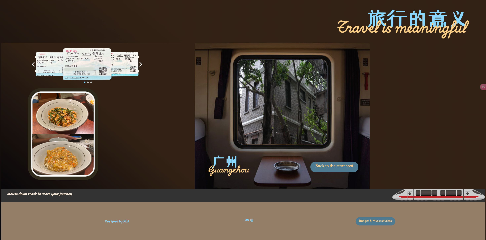

I have a friend who is now a programmer on the backend of a business, and she's also studied front-end content, so I've asked her to give me some advice.
She thought the page was very creative, but too many image variations also led to visual fatigue. The colors use a high contrast color scheme to make the page title clearer. The operation part is at the bottom of the page, the text of the instruction is too small and the description is not clear, which makes the user feel confused when seeing this page, it can be put in an area with the text of the introduction. The layout of the page doesn't fit the screen, this is a difficult problem to solve. As I am using position attributes in css to achieve stacking of images. So it will be harder to control.
The main color of this page is brown, which is unified with the color scheme of the windows. This color scheme is very good and highlights the images and interactive elements very well. The name of the city is a combination of Chinese and English, and the user may not realize that the image group is switched. This is because there is no transition when the image group is switched.
My initial interaction idea is 1. select the ticket, 2. scroll down mouse to make the train move, 3. scene change corresponding to the ticket. My friend reflected that there is a conflict between scroll down to control the train and scroll down to view the content below. After I change the scroll down operation to keep pressing the mouse, the operation and the picture change also use some conflicts. I wanted the user to select the ticket every time, and then move the train before the picture group was switched. To realize the concept of using the ticket to take the train to the destination. But in the process of writing the code, I found that the logic of the function is very complex. The effect now is that after the train moving code runs, switching images directly switches the image group. I also have a responsive layout, but I don't know how to combine the two pages. My friend will help me later on how to improve it.
My friend provided valuable feedback on my webpage, praising its creative design and cohesive brown color scheme. However, she pointed out issues like visual fatigue from too many images, unclear and small instructional text, and a layout that doesn’t fit the screen well. She also noted interaction conflicts and complexity in the function logic. I’ll focus on improving clarity, optimizing the layout, and simplifying the functionality to enhance the user experience.